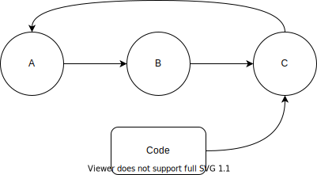
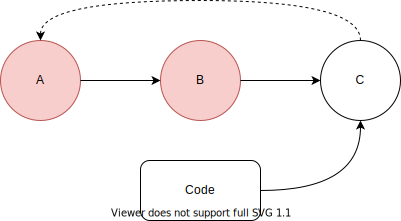
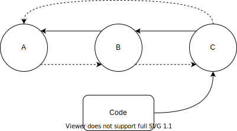

如何写一个简单的 DSL 从 JSON 中提取数据（二）
前言
拖更了这么久的原因，主要是因为谈了女朋友，就没什么时间静下写东西了。 言归正传，这一期主要是讲一下一些设计 JSONPath 表达式的想法。
JSON 数据的基本的数据类型（整型，浮点型，字符串，布尔）与 Python 都有分别相对应的数据类型。
还有两大支持数据嵌套的结构，即 Array 和 Object。他们解析成 Python 对象后分别是 list 和 dict 对象。
这样通过 json.load or json.loads 可以把 JSON 文本变成了对应的 Python 数据。
assert json.loads(
'{"data": [{"name": "bar"}]}'
) == {'data': [{'name': 'bar'}]}而 JSONPath 表达式，就是用来简洁明了地表示，如何从这中 JSON 结构数据中提取目标数据。 这样的表达式就需要较高的易读性和表达力。
上一期通过几个简单的函数实现了 JSONPath 表达式的执行，展示了实现 DSL 的基本方法。 如果要实现 production-ready 的轮子的话，光这样是远远不够的。 上一期 demo 的缺点很明显，缺少必要的调试方法，缺少一些 corner-cases 的处理，难以持续地扩展维护等问题。
Executable 的设计
一个 JSONPath 表达式从字符串转换成可执行的算法，需要通过以下三个环节
- Parser 解析器
- Transformer 转换器
- Executable 执行器
开发 DSL 的三个环节，其中最重要的就是 Executable 这一部分了。 先粗略地列一下作为 Executable 要支持哪些基本功能
Executable 能通过链式调用构建出来
jp = Name("bar").Name("boo") assert jp.find({"bar": {"boo": 1}}) == [1]Executable 与 Expression 能相互转换
jp = parse("bar.boo") assert jp.get_expression() == "bar.boo"通过继承基类的方式，使其易于扩展
数据结构
为了使其能通过链式调用而创建 Executable 实例，需要实现一个类链表的结构。 链式调用的结果为尾节点，所以 caller 只能持有尾节点的饮用。
这样整个数据结构需要满足以下条件
- 尾节点保留头节点的引用
每个节点（除了尾节点）都要保持右节点的引用
这样才能在尾节点调用方法，按顺序遍历头节点直到尾节点。

为了避免引用成环，所以要使用
weakref.ref来做成弱引用。
但这样会引入新的问题，除了尾节点以外的节点，会因为引用计数归零而被回收。 为了避免这问题，则需要引入新的条件 3
每个节点都要保留左节点的实引用

这样所有节点都不会因为引用计数归零而被回收。
也为了避免引用成环，条件 1 与 2 的引用都要用 weakref.ref 改成弱引用。
以下为具体的代码实现
import weakref
from typing import Optional
class Expr:
def __init__(self):
self.left = None
self.ref_right = None
self.ref_begin = None
@property
def begin(self) -> "Expr":
if self.ref_begin is None:
return self
else:
begin = self.ref_begin()
return begin
@property
def right(self) -> Optional["Expr"]:
return self.ref_right and self.ref_right()
@staticmethod
def chain(left: "Expr", right: "Expr"):
if left.ref_begin is None:
left.ref_begin = weakref.ref(left)
right.ref_begin = left.ref_begin
right.left = left
left.ref_right = weakref.ref(right)
return right
链式调用
这样解决了 Executable 数据结构的问题，那现在要实现的是链式调用。
可以通过 Python 魔术类方法 (magic methods) __getattr__ 来实现。
__getattr__在 obj.XXX 获取不到时，才会调用到。
...
from typing import Callable
class Expr:
_classes = {"Name": Name}
...
def __getattr__(self, name: str) -> Callable[..., "Expr"]:
if name not in Expr._classes:
return super().__getattribute__(name) # for raising AttributeError
cls = Expr._classes[name]
def cls_(*args, **kwargs) -> Expr:
right = cls(*args, **kwargs)
return self.chain(left=self, right=right)
return cls_以上代码，在 __getattr__ 调用 __getattribute__ 是为了方便抛出 AttributeError。懒得自己写哟。
还引入了一个类变量 Expr._classes 用来保存所有 Component class。
这样每次扩展，定义新的 Component class 的时候，都要把新类注册到 Expr._classes 中。
如果通过元类方法 type.__new__，就能在定义新类的时候，自动把新类注册到 Expr._classes 中。
...
class ExprMeta(type):
_classes = {}
def __new__(metacls, name: str, bases, attr_dict):
cls = type.__new__(metacls, name, bases, attr_dict)
metacls._classes[name] = cls
return cls
class Expr(metaclass=ExprMeta):
...数据流
设计完了数据结构，再通过 Python 的魔术方法及其元类编程范式实现了链式调用。 现在开始设计数据在整个 Executable 链中的执行流。
各个 Component 类都需要实现 find 方法，用来从数据中提取目的数据。
通过链式调用构建出一个 Executable 对象，当尾节点的 find 方法调用后。
从头节点到未节点一连串地执行 find 方法去提取，
每个节点 find 所执行的数据都是上个节点执行 find 的提取结果。
...
from abc import abstractmethod
class Expr(metaclass=ExprMeta):
...
@abstractmethod
def find(self, data):
raise NotImplementedError现在定义了个抽象方法 Expr.find。
可如何让尾节点调用 find 方法的时候，实际上，数据是从头节点一连串地提取到未节点呢？
可以定义一个新方法 actual_find 替换掉 find，用来执行 Component 实际的提取算法。
而 find 变为一个普通方法，每次执行都会从 Executable 的头节点执行 actual_find，执行到当前节点。
...
class Expr(metaclass=ExprMeta):
...
@abstractmethod
def actual_find(self, data):
raise NotImplementedError
def find(self, data):
curr = self.begin
while True:
data = curr.actual_find(data)
if curr is self:
break
curr = curr.right
return data修改完后看似没有任何问题的代码，实际上这样写有 Bug，稍后就讲到缘由。
以上大概的讲了一下 Executable 的数据提取流程，现在讲一下数据提取过程中数据流的变化情况。 先分析一下数据，JSON 结构的数据为树状结构，其中能分叉的节点变量的类型为 list 及 dict。
- dict 结构为多对无序的键值对（Key Value pairs）
- list 结构为多对有序的键值对（Index Value pairs）。
其中 list 的有序键相当于其对应值在 list 结构的第几个位置（以 1 开始计数）， 或者离第一个偏移的多少个位置（以 0 开始计数）
这样我们可以通过一连串的键去找到我们想要的数据。
例如通过 "goods" -> 1 -> "category" 这三个键，获取第二个货物的类目为 magazine。
{
"goods": [
{"price": 100, "category": "Comic book"},
{"price": 200, "category": "magazine"},
{"price": 200, "no category": ""}
],
"targetCategory": "book"
}各个部分的执行过程中的数据变化，如下表。
| depth | key/index | data |
|---|---|---|
| 1 | goods | [{…}, {…}, {…}] |
| 2 | 1 | {“price”: 200, “category”: “magazine”} |
| 3 | category | “magazine” |
如果要获取整个商品列表下的所有类目，这样势必要迭代整个商品列表。
我们用星号 "*" 来表示任意键，这样情况会变成这样子。
| depth | key/index | data |
|---|---|---|
| 1 | goods | [{…}, {…}, {…}] |
| 2 | * | [{…}, {…}, {…}] |
| 3 | category | [“Comic book”, “magazine”, None] |
现在可以看明白，为啥刚刚讲的代码会有 Bug 了嘛，因为处理不了以上这种需要迭代提取的情况。
为了处理这种需要迭代处理情况，就需要在find中添加判断条件，
判断上个 Component 会不会产生需要迭代的数据。
还需要添加处理迭代提取数据的逻辑，再对数据结果用下个 Component 去提取……是不是脑袋都要炸了。
...
class Expr(metaclass=ExprMeta):
...
def find(self, data):
curr = self.begin
while True:
data = curr.actual_find(data)
if isinstance(curr, Array):
data = [... for item in data]
# 这样写下去，又会写出新的 bug
if curr is self:
break
curr = curr.right
return data迭代提取必会引入新的变量来维护，开发出套娃且复杂的代码逻辑，导致函数的代码复杂度提高。 虽然用 loop 是可以硬写提取逻辑，但是写递归函数的话，开发起来更方便，有效降低代码复杂度，更有助于理解。 再统一一下输出结构，就可以去掉多余的条件判断，又可以很方便地以递归的方式提取数据。
Component 提取的结果无论是单个还是多个，单个结果用 list 包裹一下，没有结果就用空列表。 这样方便接下来的 Component 去处理，能少写一些判断。
统一后，数据流就会变成这样
| depth | key/index | data |
|---|---|---|
| 1 | goods | [{…}, {…}, {…}] |
| 2 | 1 | [{“price”: 200, “category”: “magazine”}] |
| 3 | category | [“magazine”] |
...
from typing import Iterable, Any
class Expr(metaclass=ExprMeta):
...
@abstractmethod
def actual_find(self, data) -> Iterable[Any]:
raise NotImplementedError
def _dfs_find(self, curr: "Expr", data_list: List[Any]) -> Iterable[Any]:
right = curr.right
for data in data_list:
found = curr.actual_find(data)
if not found:
continue
if curr is self:
yield from found
continue
yield from self._dfs_find(right, found)
def find(self, data) -> Iterable[Any]:
yield from self._dfs_find(curr=self.begin, data_list=[data])深度优先遍历整个 JSON 结构，遍历的深度就看链式构建的 Executable 的“长度”了。 沿着 JSON 结构的某一支提取下去，直到 Executable 的尾节点，就可以把提取到的数据送出。 再退回上一个需要迭代提取的位置，再沿着下一个兄弟枝干提取下去。 如此反复即可提取到所有需要的数据。
Debug mode
面对复杂的 JSON 文本数据，写错 JSONPath 是难以避免的。
为了写 JSONPath 写得更快更好，这就需要让 Executable 有调试方法，让我们边观察提取结果边更改表达式。
这个功能这期就不讲了，其实我还没想好，只能等到后面几期再来讲了。
表达式设计
因为 Parser 及 Transformer 部分不是本期的重点，所以就先忽略这个。 先简单讲一下表达式的设计就好咯。
这期只以实现 JSONPath 的基本功能为例，通过 dict 的键名 及 list 的下标来提取数据。
这样 JSONPath 表达式先简单表示为以点 . 相隔的 Component 列表。
其中以中括号包裹整数 [1] 或星号 [*] 来代表处理的值类型为 list 类型。
既然 list 变量可以用 [*] 去迭代，那 dict 变量为何不能这样呢，用 * 表示。
| 处理的数据类型 | 表达式例子 | 功能描述 |
|---|---|---|
| object/dict | goods | 提取 dict 中对应键 goods 的值 |
| object/dict | * | 遍历提取 dict 中所有键的值 |
| Array/list | [0] | 提取 list 中对应下标 0 的值 |
| Array/list | [*] | 遍历提取 list 中所有值 |
JSONPath 表达式既然通过 Parser 及 Executable 生成相应的 Excutable； 那么 JSONPath Excutable 也可以生成对应的表达式。
...
from typing import List
class Expr(metaclass=ExprMeta):
...
@abstractmethod
def _get_partial_expression(self) -> str:
raise NotImplementedError
def get_expression(self) -> str:
curr = self.begin
parts: List[str] = []
while True:
part = curr._get_partial_expression()
parts.append(part)
if curr is self:
break
curr = curr.right
return ".".join(parts)
def __repr__(self):
return f'JSONPath({self.get_expression()!r})'引入一个新的抽象方法 _get_partial_expression，方法 get_expression 及方法 __repr__。
_get_partial_expression用来获取在 Executable 中某个节点的字符串表示get_expression可获取完整的表达式（实际可以截断到某个节点，看调用的节点位置）__repr__方便阅读调试（从日志或者标准输出流）
为了表达式更为简练，表达式goods.[1].category 可忽略掉goods与[1]间的分隔符.，简化为 goods[1].category。
所以在后面具体实现的时候，还要对以上的代码进行修改。
Executable Component 实现
通过继承的方式，实现对应几个抽象方法 actual_find 及 _get_partial_expression，就可以方便地扩展 JSONPath Executable 功能。
Name 实现
...
class Name(Expr):
def __init__(self, name: Optional[str] = None):
super().__init__()
self.name = name
def actual_find(self, data):
if not isinstance(data, dict):
return []
if self.name is None:
return data.values()
else:
if self.name not in data:
return []
return [data[self.name]]
def _get_partial_expression(self):
return self.name or "*"简单的测试一下。
executable = Name().Name("a")
assert "*.a" == executable.get_expression()
assert [1, 1] == list(
executable.find({
"a": {"a": 1},
"b": {"a": 1},
"c": {"b": 2}
})
)Array 实现
...
class Array(Expr):
def __init__(self, idx: Optional[int] = None):
super().__init__()
self.idx = idx
def actual_find(self, data):
if not isinstance(data, list):
return []
if self.idx is None:
return data
else:
return data[self.idx : self.idx + 1]
def _get_partial_expression(self):
return f"[{self.idx or '*'}]"由于要简化表达式，省略 Name 与 Array 间的分隔号 . ，这样得对 Expr.get_expression 进行修改。
class Expr(metaclass=ExprMeta):
...
def get_expression(self) -> str:
curr = self.begin
parts: List[str] = []
while True:
part = curr._get_partial_expression()
if isinstance(curr, Array):
parts[-1] += part
else:
parts.append(part)
if curr is self:
break
curr = curr.right
return ".".join(parts)再简单的测试一下。
executable = Name("goods").Array().Name("category")
assert "goods[*].category" == executable.get_expression()
assert ["Comic book", "magazine"] == (
list(
executable.find(
{
"goods": [
{"price": 100, "category": "Comic book"},
{"price": 200, "category": "magazine"},
{"price": 200, "no category": ""},
],
"targetCategory": "book",
}
)
)
)总结
相比上一期，这一期的内容比较多一点。这也难免，因为一涉及到具体代码，可以讲的东西就变得很多。 为了不让这期内容变得难以理解，各个部分的内容都进行了调整。 适当的缩减内容，避免偏离主题；改变前后内容顺序，使其前后联接，让大家更容易理解。
这样时不时通过把自己的思路设计讲述给大家，分享给大家，对自己也有实实在在的好处。 让我想通了很多东西，也有了很多新点子，又可以重构一波代码了，实现新功能。
博客更新得慢，实际是因为我太懒了。别骂了别骂了（逃
衍生阅读
这次就没有啥衍生阅读了，但希望大家多多思考。
不过最近读了一个系列的文章，十分有意思，忍不住想推荐给大家一下。
『Python 工匠』是什么？ 来自一位 Pythonista 的编程经验分享，内容涵盖编码技巧、最佳实践与思维模式等方面。